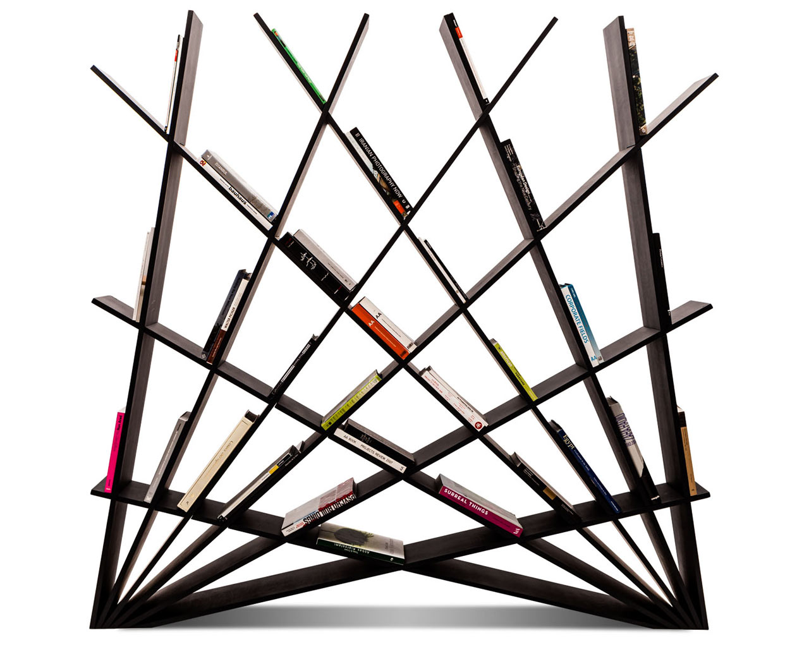
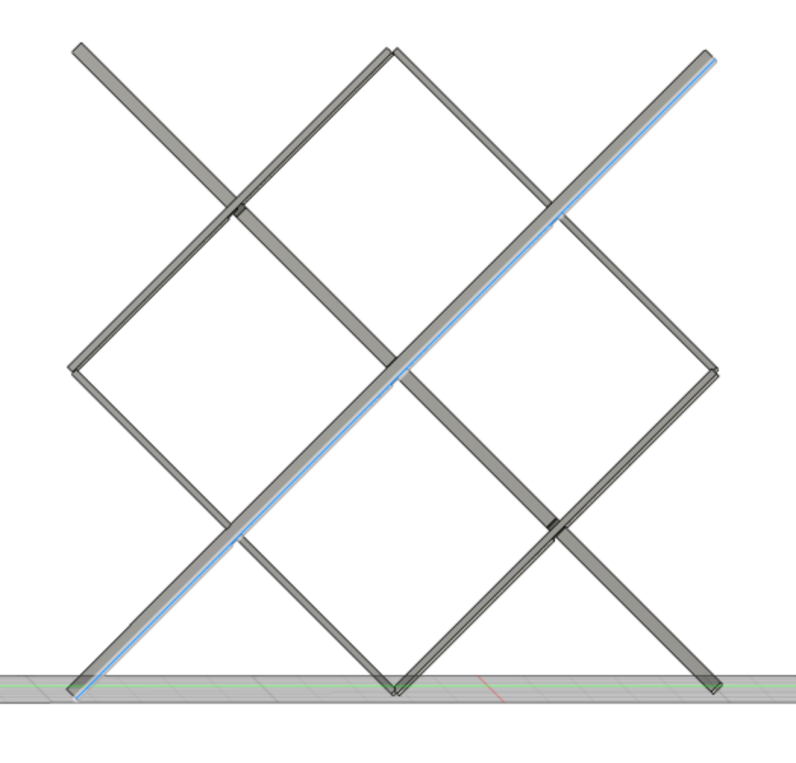
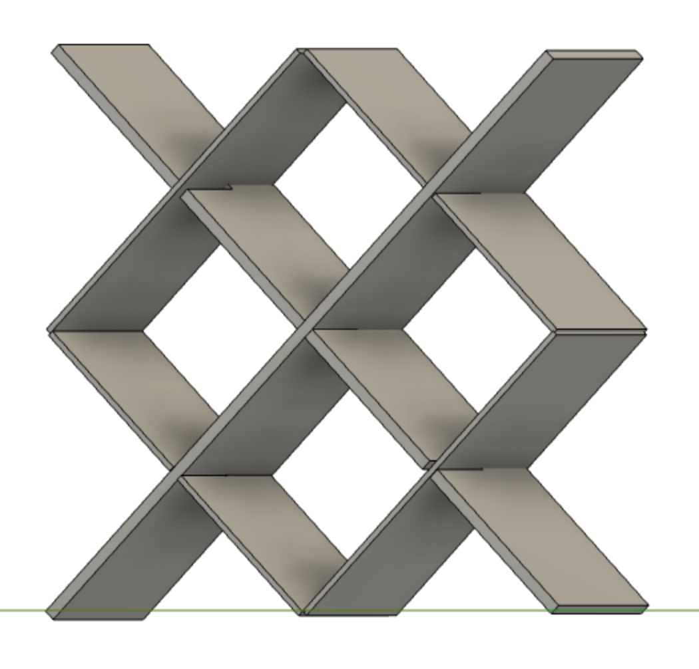

<style>
h3 {
color: DeepPink;
}
h2 {
color: DeepBlue;
text-align: center;
}
</style>
<div class="container-fluid">
### Week 2: 2D Design and Cutting
<h2> The Double Fan Jewelry Stand(?)
</h2>
<p>

<br>
For this week's assignment to create a household object through 2D design, I wanted to create something that I could use in my dorm room, just because I have never been able to create something in a Harvard class before that I would keep for anything other than sentimental reasons...
<br>
<br>
I started coming up with ideas just by googling projects that slot together. One of my coolest travel memories is spending time in China, where I visited ancient buildings in Guizhou which had intricate wooden roofs that slotted together. Unlikely that I would be able to make that this week (lol).
<br>
<br>
<img src="BUILDING.png" alt="Guizhou building" width="500">
</p>
<br>
<p2> I was inspired by the shelf designs (above) which was made up of two intersecting fans, designed by Maryam Pousti of Studio Pousti. I liked the idea of making a mini version, which could work as a desktop jewelry holder. However, since this was my first time making something like this, I thought I would go for a super simple, trellis like design. You can see in my sketches below I tried drawing out the Pousti design, and then switched over to a more simple shape.
<br>
<br>
<img src="fan.png" alt="Pousti Sketches" width="400">
<img src="trellis.png" alt="My Sketches" width="400">
</p2>
<br>
<br>
<p3>
I then moved to Fusion 360, first making the two component shapes, and then assembling them together to mock up my shape. This was my first time using this software and it took a bit of time to figure out, but it was super cool to be able to assemble the pieces and see a mockup of the finished product!
</p3>
<br>


<br>
<p4> After some health issues I was able to belatedly print my design! Operating the laser cutter on my own was tricky, and Kassia gave me lots of help at the offset. Once I got the hang of it, it was a lot easier than I thought.
<img src="lasercutting.gif" width="250">
<br>
<br>
<strong> Final Thoughts </strong>
<IMG SRC="final1.png">
<IMG SRC="final2.png">
Finally I had my finished product! I was pleased with how it turned out, and honestly think I could have gone for a more ambitious project once I got the hang of the cutting tools. If I were to do the project again, I would have made the slots slightly wider, as they did fit, but were extremely snug.
</p4>